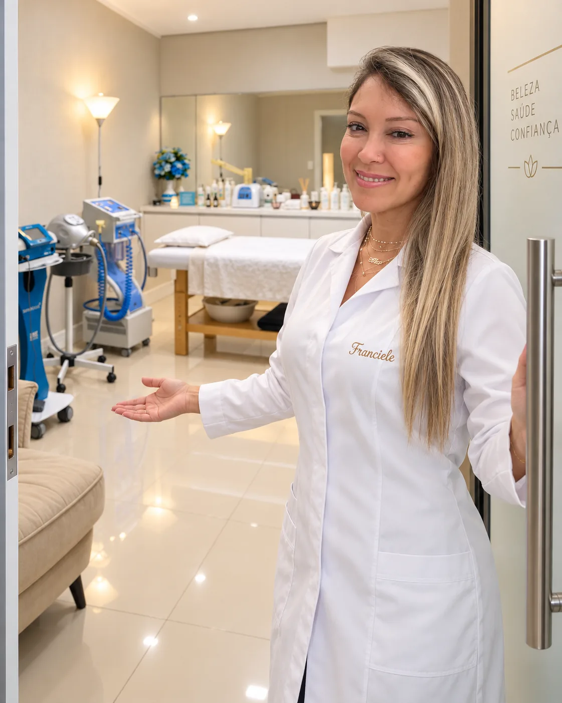
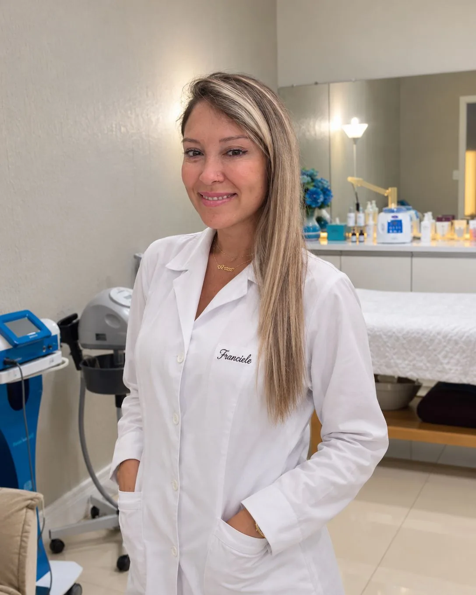
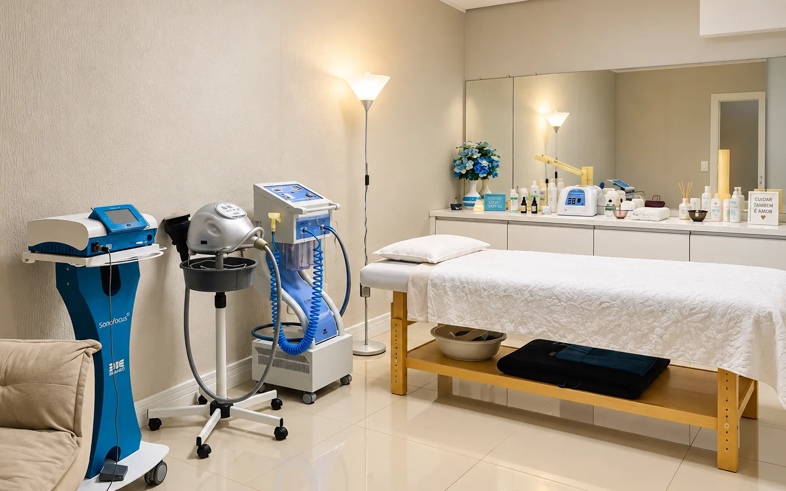

Saúde & Bem-Estar · Flores da Cunha
Estética e terapias de spa no seu tempo
Estética facial, estética corporal e massoterapia no Centro da cidade. Aqui a atenção é toda sua: é a Franciele que te recebe e conduz a sessão inteira, com calma e no tempo que o seu corpo pedir.

Cada atendimento tem o tempo que precisa ter.
A clínica atende no Centro de Flores da Cunha desde 2016, sempre um atendimento por vez. É a Franciele que te recebe, conduz a sessão inteira e acompanha o resultado depois, e é isso que as clientes mais comentam nas avaliações.
Estética, massoterapia e educação física reunidas na mesma formação, o que ajuda a enxergar pele, corpo e movimento como uma coisa só, e não como três assuntos separados.
Tratamentos
Três frentes de cuidado, sob o mesmo olhar
Você não precisa chegar sabendo o nome do procedimento. Me conta o que está te incomodando e a gente escolhe junto o caminho que faz sentido para a sua pele, para o seu corpo e para o tempo que você tem.
Estética facial
Limpeza, renovação e hidratação da pele, com o protocolo escolhido conforme o seu tipo de pele e o que mais te incomoda hoje.
Estética corporal
Protocolos manuais e com equipamentos, conduzidos em sequência de sessões, acompanhando a sua evolução de perto.
Massagens e terapias de spa
Do alívio de uma tensão pontual ao ritual de uma tarde inteira. Sala silenciosa, aroma no ambiente e o tempo que a sessão pedir.

Quem atende você
Prazer, sou a Franciele
Quem te recebe na porta é a mesma pessoa que conduz a sua sessão do início ao fim. Ninguém passa o seu caso adiante, e é justamente esse cuidado que as clientes repetem nas avaliações.
Reuni três formações que costumam andar separadas: estética, massoterapia e educação física. Na prática isso muda a leitura de cada caso, porque a pele, o corpo e o movimento passam a ser olhados juntos, e não como assuntos isolados.
- Formação em Estética
- Formação em Massoterapia
- Formação em Educação Física
- Atendendo em Flores da Cunha desde 2016
Plano mensal
Constância vale mais do que intensidade
A pele e o corpo respondem a cuidado regular, não a uma sessão isolada de vez em quando. No plano mensal o seu horário fica reservado todo mês, esperando por você, sem precisar correr atrás de agenda.
Sem contrato, sem multa e sem fidelidade. Se precisar pausar em algum mês, é só me avisar.
Quero conhecer o plano mensal- Uma sessão por mês, sempre no seu horário
- Prioridade na agenda, inclusive nas datas concorridas
- Condições especiais nos complementos de sessão
- Acompanhamento da sua evolução, mês a mês
- Orientação de cuidado entre uma sessão e outra
- Sem fidelidade, você pausa quando quiser
Como funciona
Se é a sua primeira vez
Muita gente chega aqui sem nunca ter feito estética ou massagem, e isso é completamente normal. Para tirar qualquer receio, este é o caminho do começo ao fim. Nada acontece sem você entender antes.
A gente conversa antes
Você me conta pelo WhatsApp o que está sentindo ou o que gostaria de cuidar. Eu já te digo o que faz sentido e o que não faz, sem compromisso nenhum.
Avaliação com calma
Na chegada a gente senta e conversa sobre a sua rotina, o seu histórico e o que você espera, antes de qualquer procedimento começar.
A sua sessão
A sala fica reservada só para você, sem interrupção e sem ninguém batendo na porta porque o horário acabou.
E depois
Você sai sabendo o que esperar nos próximos dias, o que observar e se vale voltar, em quanto tempo e por quê.
Avaliações
O que elas contam depois
Avaliações publicadas por clientes no Perfil da Empresa no Google, reproduzidas aqui exatamente como foram escritas.
★★★★★Melhor massagem da vida! Um atendimento impecável, uma profissional incrível e um ambiente extremamente acolhedor. Você é maravilhosa, Fran!
Ana Júlia Macedo
★★★★★Atendimento e espaço maravilhoso e aconchegante! É mais que um momento de relaxamento ou estético. A Fran consegue captar a necessidade de cada cliente!! É tudo perfeito! Super indico!!!
Joseane Garibaldi
★★★★★Ganhei um combo relaxante com massagem de pedras quentes, escalda pés e reiki e tive uma experiência maravilhosa. O ambiente é super acolhedor e a Fran uma querida. Pretendo voltar e indico muito!
Morgana Piccoli Cavalli
★★★★★Ótimo atendimento, com cuidado, atenção e profissionalismo. Clínica acolhedora e com ambiente agradável. A profissional demonstra muito amor pelo que faz. Recomendo muito!
Helena de Fátima Vieira de Sá
★★★★★Atendimento excelente, com cuidado, carinho e atenção aos detalhes. Profissional incrível, alto astral, realizou os procedimentos com muito profissionalismo. Super recomendo!
Lilinquer Vieira
★★★★★Excelente! Uma querida e a limpeza de pele com peeling de diamante foi impecável. Recomendo!
Ketley Reis
No dia a dia
Acompanhe no Instagram
É lá que saem os bastidores dos atendimentos, as novidades da agenda e as dicas de cuidado para o dia a dia. Me segue para ficar por dentro.
@francieletellesclinica
Dúvidas frequentes
Perguntas que chegam sempre
Preciso agendar ou posso passar na hora?
Quanto custa uma sessão?
Nunca fiz estética. Como é a primeira vez?
Quantas sessões eu preciso fazer?
Atende homens?
Posso fazer drenagem linfática na gravidez?
Fazem drenagem pós-operatória?
Preciso desmarcar. Como faço?
Atende quem é de fora de Flores da Cunha?
Onde fica
No Centro de Flores da Cunha
A clínica fica na Rua Borges de Medeiros, a rua principal do Centro, na sala 23. Se ficar em dúvida ao chegar, me chama no WhatsApp que eu te oriento.
-
Endereço
Rua Borges de Medeiros, 1881, Sala 23
Centro, Flores da Cunha, RS, 95270-000 - WhatsApp (51) 99129 9114
-
Horários
Segunda a sexta, com hora marcada
Sábados conforme a disponibilidade da agenda - Como chegar Abrir no Google Maps
